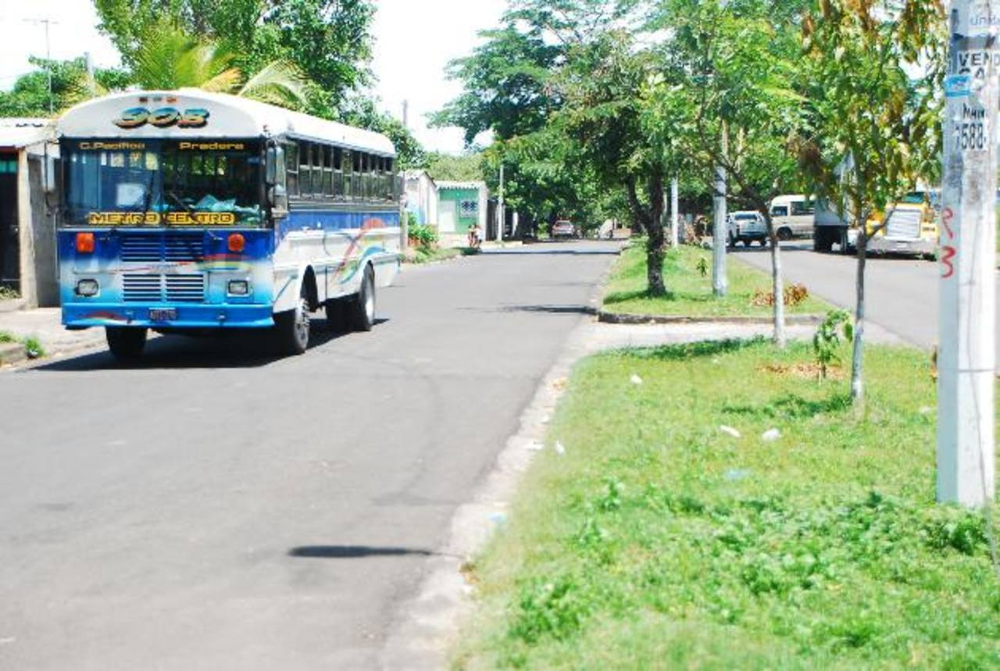

Mi nombre es Jaime Fernando Berríos Ortíz, nací el 08 de marzo de 1999. Soy hijo de Jaime Alberto Berríos y de María Emma Ortíz de Berríos. Vivo en la Colonia Ciudad Pacífica de la Ciudad de San Miguel.
Al Hacer click en la imagen, se abre la ubicación a la Colonia
Soy una persona estudiosa, dedicada, responsable, con metas en la vida, las cuales, quiero cumplirlas, mis principales metas a corto plazo es ser el mejor de la clase, y así seguir con mis estudios, y lograr mis objetivos a largo plazo, como son tener una trabajo estable con mis estudios completamente terminados, y así formar una familia, tener un trabajo estable.
Me considero una buena persona, amigable, comprensiva, responsable, educada, y creo que para todo hay tiempo, aunque a veces me gana la inquietud, y termino por hacer cosas mañas que parecen buenas, y si pudiera cambiar algo, sería mi fuerza de voluntad ya que es muy baja, me gustaría ser una persona que aprenda a decir que no cuando se debe.